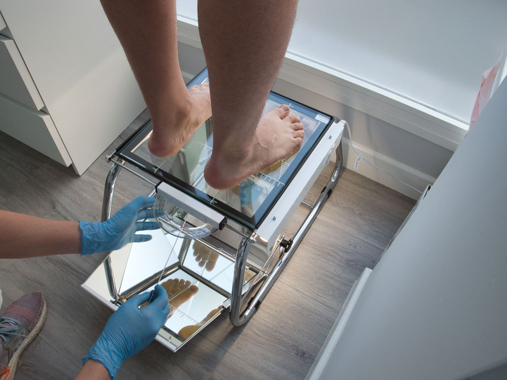
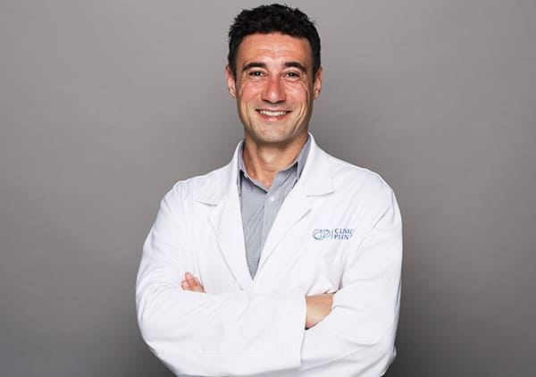

Redéfinir la chirurgie du pied par l'innovation et la précision
Sous l'impulsion du Dr Fabio D'Angelo — le seul chirurgien à réaliser la correction de l'oignon TightRope® endoscopique, invité à enseigner cette technique avancée à des chirurgiens dans toute l'Europe.
Animation médicale illustrative d'une technique de correction chirurgicale mini-invasive de l'hallux valgus. Contenu à visée informative.
L'avenir de la chirurgie de l'oignon est déjà là
La correction de l'oignon par technique TightRope® endoscopique : le nec plus ultra de la chirurgie mini-invasive.
L'oignon (hallux valgus) est l'une des déformations du pied les plus fréquentes et touche des millions de personnes dans le monde. À mesure qu'il progresse, il peut provoquer des douleurs, des difficultés à trouver des chaussures confortables, une mobilité réduite et un impact significatif sur la qualité de vie.
Bien que la procédure TightRope® gagne en reconnaissance, elle n'est réalisée que par un nombre restreint de chirurgiens du pied et de la cheville hautement spécialisés dans le monde. Le Dr Fabio D'Angelo est actuellement le seul chirurgien à réaliser la procédure TightRope® pour oignon selon une technique entièrement endoscopique, alliant la précision de la chirurgie endoscopique aux avantages du système TightRope®.
Reconnu comme une référence dans ce domaine, le Dr D'Angelo est également invité à former des chirurgiens dans toute l'Europe, partageant son expertise à travers des formations spécialisées sur la technique TightRope® endoscopique.
Bénéfices de la chirurgie de l'oignon TightRope® endoscopique
- Incisions plus petites et cicatrices minimes
- Atteinte réduite des tissus mous
- Moins de douleur postopératoire
- Récupération fonctionnelle plus précoce chez les patients bien sélectionnés
- Restauration de l'alignement et de la biomécanique naturelle du pied
Si la douleur liée à l'oignon affecte votre quotidien, une consultation spécialisée peut aider à déterminer si la chirurgie TightRope® endoscopique est le traitement adapté à votre pied.
Prêt(e) à franchir la prochaine étape ?
Prenez rendez-vous avec le Dr Fabio D'Angelo pour savoir si la technique TightRope® endoscopique convient à votre pied.
Tout sur la chirurgie du Dr D'Angelo

À propos
Le parcours et la philosophie de soins du Dr Fabio D'Angelo.
Découvrir →
Chirurgie
La technique TightRope® endoscopique et l'ensemble des traitements chirurgicaux.
Découvrir →
Ce que nous traitons
De l'oignon au névrome de Morton : identifiez votre problème.
Découvrir →
FAQ
Douleur, récupération, conduite, retour au sport...
Découvrir →
Contact
Réservez votre consultation à la Clínica Planas, Barcelone.
Découvrir →Une approche globale
La chirurgie n'est qu'une partie du parcours. Le Dr D'Angelo accompagne le patient avant et après l'intervention avec étude biomécanique, physiothérapie podologique, cryothérapie postopératoire et semelles personnalisées pour une récupération optimale.
- Étude biomécanique et scanner 3D préalables
- Techniques percutanées mini-invasives
- Rééducation post-chirurgicale
- Cryothérapie pour réduire l'inflammation